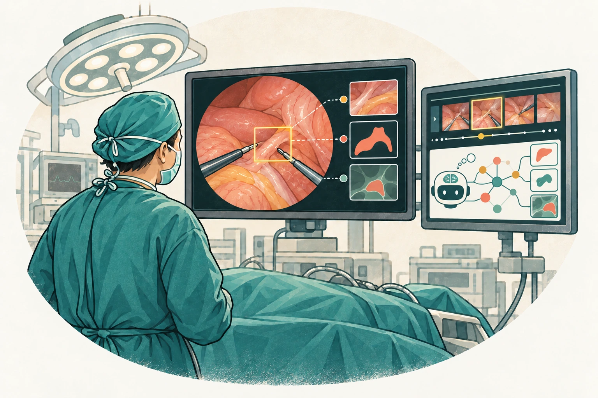
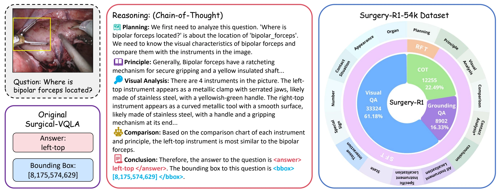
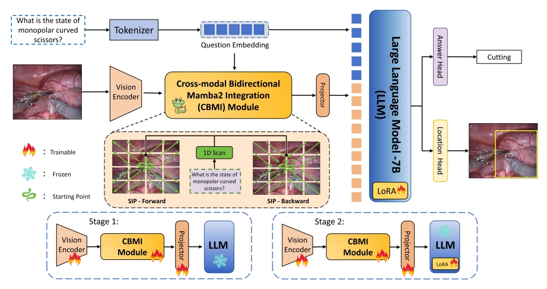

SurgIntent
A benchmark and knowledge-guided multi-agent framework for understanding the clinical intent behind surgical actions and the objectives they prepare for.
Third-year Ph.D. student · HKUST(GZ)
Medical AI / Surgical Multimodal Large Language Models
I am a third-year Ph.D. student in Robotics and Autonomous Systems at HKUST(GZ), advised by Prof. Lei Zhu.
My research focuses on medical AI and surgical multimodal large language models. I am particularly interested in surgical scene understanding from images and videos, reasoning in medical multimodal large language models, and multi-agent systems.
Previously, I received my M.Phil. from HKUST(GZ) and my B.Eng. from Xi’an Jiaotong University.

Understanding surgical images and videos, including anatomy, instruments, actions, and surgical intent.
Integrating medical images and clinical information in multimodal large language models for medical understanding and reasoning.
01 / RESEARCH
A benchmark and knowledge-guided multi-agent framework for understanding the clinical intent behind surgical actions and the objectives they prepare for.

Reasoning multimodal models for surgical question answering and localization, trained with supervised fine-tuning and reinforcement learning.

Mamba2-enhanced cross-modal integration and instrument-aware perception for visual question localized-answering in robotic surgery.
02 / UPDATES
Submitted , our work on surgical intent understanding, to ICLR 2027.
RESEARCHOur work on knowledge-guided surgical visual reasoning appears in IEEE JBHI, Vol. 29, Issue 12.
PUBLICATIONSurgical-MambaLLM appears at MICCAI 2025.
CONFERENCE03 / RESEARCH RECORD
8 works
04 / BACKGROUND
A background in mechanical engineering and robotics, with research interests in surgical scene understanding and medical multimodal large language models.
The Hong Kong University of Science and Technology (Guangzhou)
Advised by Prof. Lei ZhuThe Hong Kong University of Science and Technology (Guangzhou)
Xi’an Jiaotong University
Outstanding Undergraduate ThesisBeyond research, I enjoy singing, football, basketball, and badminton. I previously served as president of the Feeling Music Club at Xi’an Jiaotong University.
OUTSIDE THE LABLET’S CONNECT
Surgical scene understanding and medical multimodal large language models.